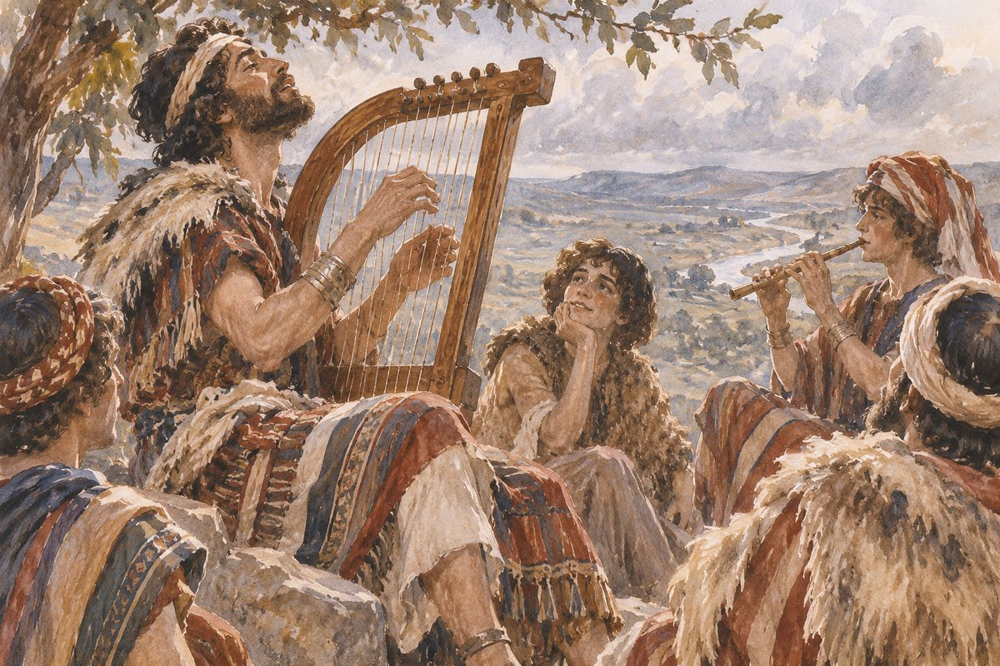

JUBAL: THE FATHER OF ALL MUSICIANS
“And his brother’s name was Jubal: he was the father of all such as handle the harp and organ.” (Gen 4:21, KJV)

This is the first mention of music in Scripture. And the first person the Torah associates with the art of music is Jubal (YUVAL, יוּבָל, H3106), a descendant of Cain.
There is a long-standing tradition of viewing Cain’s descendants primarily through the lens of their ancestor’s curse. In this interpretation, even the achievements of his descendants bear the mark of sin. But does the Torah itself really require us to accept this as the only possible understanding?
Genesis 4 names three brothers: Jabal, Jubal, and Tubal-cain. One is associated with livestock and nomadic life, another with music, and the third with metalworking. What is more, the first two are described not merely as practicing their crafts, but as each becoming the “father” of those who continued his work. The word “all” (KOL, כָּל, H3605) is especially significant here. Jubal is presented not simply as the first musician, but as the founder of an entire field of human activity.
It is in this fundamental sense that we can speak of Jubal as the founder of a school of music. After all, a school is not necessarily an institution with walls, classrooms, and a class schedule. Above all, it is the passing on of knowledge, skill, and experience from teacher to followers. The Torah presents music not merely as an individual gift, but as a tradition with a father. Jubal did more than play music — he left behind followers who carried on his art. Although the text does not tell us exactly how these skills were passed on, the very description “father of all such as handle” allows us to see him as the founder of a musical tradition.
Why did the Torah consider it necessary to preserve this information? And why is it precisely in Cain’s genealogy that it first tells us about the origins of activities so important to human culture?
We can read this account as evidence of a developing civilization that had not freed itself from sin. But we can also see something else in it: even within Cain’s family line, human history is not reduced to a curse, and the gift of creativity has not disappeared from the world. I am not claiming that the second reading is the only correct one. But I am convinced that it deserves as much attention as the first.
I try, each time, to understand the Torah as though I were reading it for the first time. As though I had never heard a single sermon about the passage and did not already know what conclusion I was supposed to draw from it.
This does not mean rejecting tradition. I turn to ancient interpretations, to midrashim, and to the reflections of the sages. But my foundation remains the Masoretic Text itself — its words, their roots, their similarities in sound, repetitions, unusual expressions, wordplay, and connections between names.
In fact, the midrashic approach is not foreign to Scripture itself. The Torah, and the Tanakh as a whole, sometimes return to events and commandments already known to us, revealing new dimensions of their meaning. For example, in Exod 20:8–11, the commandment concerning Shabbat is grounded in the creation of the world, while in Deut 5:12–15, it is grounded in liberation from slavery in Egypt. One commandment is given two different explanations of its significance. This is not yet midrash in the sense of the later literary genre, but the very principle of revisiting and reinterpreting meaning is already present within Scripture.
The Hebrew names of the three brothers are especially interesting in this regard. They open up possibilities for reflection that almost completely disappear in translation. Some of these connections hint that God’s purpose may be at work even where we have grown accustomed to seeing only the consequences of a curse.
Of course, a similarity in sound is not proof, and midrash is not the literal meaning of the text. But neither should a familiar interpretation be accepted as the only possible one simply because we have heard it so many times.
What matters to me is something else: Can we offer a different reading without contradicting either the letter or the spirit of the Torah? The story of Jubal and his brothers offers a wonderful opportunity to put this question to the test.
And perhaps to discover that a text we have known since childhood contains questions we have never thought to ask.
 Awake, North Wind! (Song of Songs 4:16)
Awake, North Wind! (Song of Songs 4:16) The Calling of the Artist and of the People (Book of Revelation)
The Calling of the Artist and of the People (Book of Revelation) The Fresco as Midrash
The Fresco as Midrash